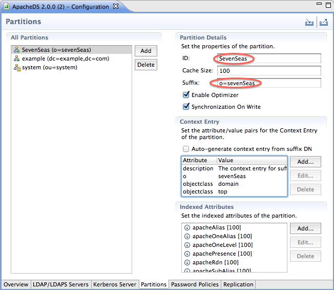
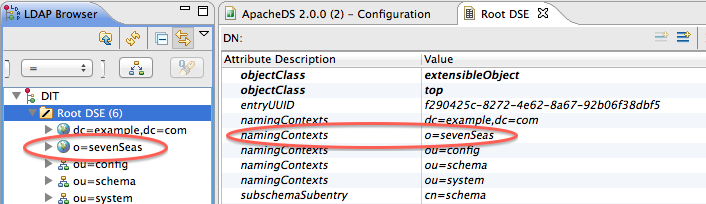
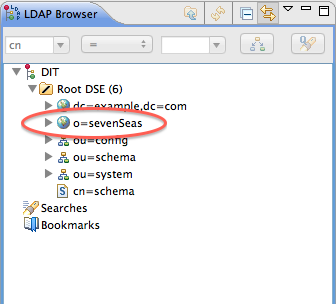

ApacheDS 2.0
Downloads
Documentation
- Basic User Guide
- Advanced User Guide
- Developer Guide
- Kerberos User Guide
- Configuration
- JavaDocs
- Cross-Reference
Support
Community
About Apache
1.4.3 - Adding your own partition
This section describes how to add your own data partition.
What are partitions?
In ApacheDS entries are stored in partitions. Each partition contains a complete entry tree, also referred to as a DIT. Multiple partitions may exist and the entry trees they contain are disconnected from each other, meaning that changes to entries in partition A would never affect entries in partition B. The entries in a particular partition are stored below some naming context called the partition suffix.
The default implementation of partitions is based on JDBM B+Trees (but it’s possible to add custom partition implementations). The ApacheDS default configuration contains a a data partition with the suffix “dc=example,dc=com”. The image below shows the suffixes of a freshly installed ApacheDS within Apache Directory Studio.
The schema subsystem and ApacheDS itself store their information in special partitions, “ou=schema”, “ou=config” and “ou=system” respectively.
Minimal partition definition
For the examples in the following sections, we want to add a partition with the suffix “o=sevenSeas”. This requires editing of the configuration, and injecting a first entry, associated with the root of this partition (here, “o=sevenseas”). This can be done using Apache Directory Studio. Open the server configuration :
and select the Partitions tab :
Add another jdbmPartition element for the sevenSeas partition, just below the example partition:

As you can see, we have modified the ID and the Suffix, all the other parameters remaining to their default values.
Save the configuration now, and restart the server.
The server has a new suffix now, but no context entry has been created for it. If you connect with an LDAP Browser (Apache Directory Studio for instance), the partition is only visible in the Root DSE. Below the Entry Editor of Directory Studio for the Root DSE after connecting to an ApacheDS instance configured like above.

Before using the partition (e.g. adding entries), you have to add a context entry. If you plan to load LDIF data to your partition anyway, simply provide the context entry (the “root” of your partition) as a first data set. In our example it might look like this:
dn: o=sevenSeas
o: sevenSeas
objectClass: top
objectClass: organization
description: The context entry for suffix o=sevenSeas
It is also possible to import a file to ApacheDS which only contains such an entry, of cause. Here is an example on how to procede for the seven seas :
In the LDAP Browser of Directory Studio, right click on the DIT entry and select “Import -> LDIF Import…". A file selections dialog appears. Browse to the LDIF file and click Finish. The entry (or entries, if you provide more of them) will be added to the partition.
The following image depicts the partitions after reconnecting with Apache Directory Studio (LDAP Browser view).

Adding a partition programmatically
The same o=sevenseas partition can be created through the application code using the Partition and DirectoryService API
Here is the sample code to create a new partition o=sevenseas and its context entry programmatically
// Get the SchemaManager, we need it for this addition
SchemaManager schemaManager = directoryService.getSchemaManager();
// Create the partition
JdbmPartition sevenseasPartition = new JdbmPartition( schemaManager );
sevenseasPartition.setId("sevenseas");
Dn suffixDn = new Dn( schemaManager, "o=sevenseas" );
sevenseasPartition.setSuffix( suffixDn );
sevenseasPartition.setCacheSize(1000);
sevenseasPartition.init(directoryService);
sevenseasPartition.setPartitionPath( <a path on your disk> );
// Create some indices (optional)
sevenseasPartition.addindex( new JdbmIndex( "objectClass", false ) );
sevenseasPartition.addindex( new JdbmIndex( "o", false ) );
// Initialize the partition
sevenseasPartition.initialize();
// create the context entry
Entry contextEntry = new DefaultEntry( schemaManager, "o=sevenseas",
"objectClass: top",
"objectClass: organization",
"o: sevenseas" );
// add the context entry
sevenseasPartition.add( new AddOperationContext( null, entry ) );
// We are done !
More configuration options for a JDBM partition
Here is a list of the used attributes, their default values and meaning :
| Property | Description | Default Value | Required |
|---|---|---|---|
| ads-partitionId | Uniquely identifies the partition | N/A | yes |
| ads-partitionSuffix | A DN (“o=sevenseas”), for instance | N/A | yes |
| ads-contextEntry | The context entry | Will be automatically deduced if no value is provided | no |
| ads-optimizerEnabled | Tells the server to turn on the optimizer | true | no |
| ads-partitionCacheSize | The cache size (only for JDBM partitions) | -1 (no cache) | no |
| ads-partitionSyncOnWrite | Syncs disks on every write operation | true | no |
Adding a partition manually
When migrating from an earlier release, or perhaps a different LDAP Directory product, you might prefer to manually add your own partition with your specific directory root DN. There are two techniques available, and the most appropriate will depend on whether you have already allowed the apacheds server to start.
When the server starts for the first time after installation, config.ldif is renamed to config.ldif_migrated. After that time, this priming ldif file is never referred to again, so any changes you make will be ignored. The reason for this change is discussed in a JIRA.
Before starting the server
Therefore, if you would like to have your (empty) partition created immediately following installation, you should prevent your server from starting during or after installation, i.e. when config.ldif has not yet been migrated.
Next, edit config.ldif to change all occurrences of “example” to suit the name of your own partition. Once the server has started and you run your first ldapsearch as the admin user, you will see that the server has created your own empty partition (instead of the example one).
Note that the entry for the “example” partition does NOT have an ads-contextEntry attribute. This “signature” attribute is created during the “migration” process (see below for details).
Subsequent ldif changes to your new partition should work provided they use the default schema.
With ldapmodify to a running server
This is task more tricky because the root of your new partition MUST have a valid ads-contextEntry attribute and you must determine its value. The other attributes (see the definitions above) are quite straightforward, but this control value must be synthesised based on the specific attribute values of your own partition.
Let us look at the ldif required to add the “example” partition:
dn: ads-partitionId=example,ou=partitions,ads-directoryServiceId=default,ou=config
objectclass: top
objectClass: ads-base
objectclass: ads-partition
objectclass: ads-jdbmPartition
ads-partitionSuffix: dc=example,dc=com
ads-contextentry:: ZG46IGRjPWV4YW1wbGUsZGM9Y29tCmRjOiBleGFtcGxlCm9iamVjdGNsYXNzOiBkb21haW4Kb2JqZWN0Y2xhc3M6IHRvcAoK
ads-jdbmpartitionoptimizerenabled: TRUE
ads-partitioncachesize: 10000
ads-partitionsynconwrite: TRUE
ads-partitionid: example
ads-enabled: TRUE
The ads-contextentry attribute is a binary value which has been base64 encoded. The algorithm has to be followed accurately to be successful. Consider our example partition and take these four lines:
dn: dc=example,dc=com
dc: example
objectclass: domain
objectclass: top
Base64 these four lines as a single string (with \n newlines, but without the prefix spaces). The result should match the ads-contextentry value shown above.
However, you need to be careful because simply adding an extra space or newline will change the base64 value and make it unacceptable to the server. Also, any valid UTF-8 attribute values which are not in the base64 character set (such as accented characters) MUST be base64-encoded strings, which effectively makes them double-encoded. e.g. “dn: cn=l√©charny,dc=com” needs to be specified as “dn:: Y249bMOpY2hhcm55LGRjPWNvbQ==”.
You will probably want to create some associated index entries. You can use those of the “example” partition in config.ldif-migrated for your templates (which do not require any special encoded attributes).